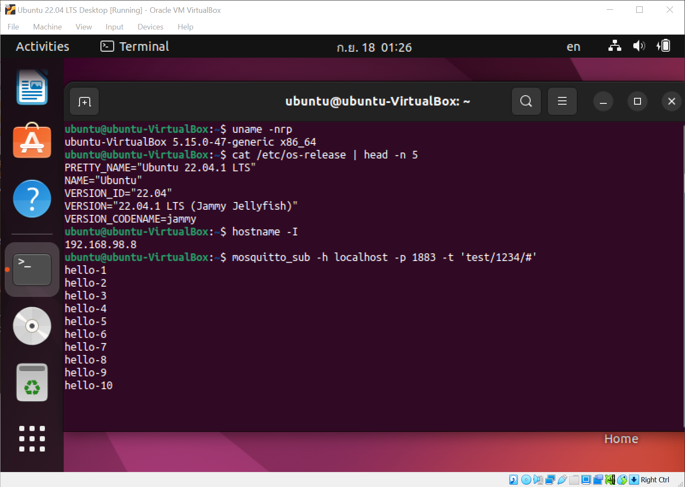

MQTT และการใช้งานสำหรับ Linux (ตอนที่ 4)#
เนื้อหาในตอนที่ 4 นำเสนอการติดตั้ง Mosquitto Broker สำหรับ Linux เช่น บอร์ด Raspberry Pi หรือ Ubuntu VM ที่ทำงานโดยใช้ซอฟต์แวร์ Oracle VirtualBox
▷ การติดตั้ง MQTT Broker สำหรับ Raspberry Pi#
ถัดไปเป็นขั้นตอนการติดตั้ง Mosquitto MQTT Broker สำหรับบอร์ด
Raspberry Pi ที่ใช้ระบบปฏิบัติการ Raspberry Pi OS (64-bit)
และตั้งชื่อเครื่องคอมพิวเตอร์ (Hostname) เป็น iot-rpi.local
$ uname -smv
Linux #1579 SMP PREEMPT Fri Aug 26 11:16:44 BST 2022 aarch64
$ cat /etc/os-release | head -n 1
PRETTY_NAME="Debian GNU/Linux 11 (bullseye)"
1) ทำคำสั่งต่อไปนี้เพื่อติดตั้งแพ็กเกจ mosquitto (เวอร์ชันที่ได้ลองใช้คือ v2.0.11-1)
$ sudo apt update
$ sudo apt install -y mosquitto
2) สร้างไฟล์ /etc/mosquitto/mosquitto.conf
$ sudo nano /etc/mosquitto/mosquitto.conf
และกำหนดรูปแบบการใช้งานดังนี้
- การเปิดใช้งานพอร์ต 1883 สำหรับโพรโทคอล MQTT แต่ไม่มีการเข้ารหัสสำหรับข้อความ
- การเปิดพอร์ต 9001 สำหรับการเชื่อมต่อด้วยโพรโทคอล WebSockets
- การเชื่อมต่อกับโบรกเกอร์ ต้องมีการป้อนชื่อผู้ใช้และรหัสผ่านเท่านั้น เนื่องจากการตั้งค่าให้
allow_anonymousเปลี่ยนจากtrueมาเป็นfalseและข้อมูลเกี่ยวกับชื่อผู้ใช้และรหัสผ่านจะถูกเก็บไวในไฟล์/etc/mosquitto/passwd
File: /etc/mosquitto/passwd
pid_file /run/mosquitto/mosquitto.pid
persistence true
persistence_location /var/lib/mosquitto/
log_dest file /var/log/mosquitto/mosquitto.log
include_dir /etc/mosquitto/conf.d
# mqtt
listener 1883
protocol mqtt
# websockets
listener 9001
protocol websockets
allow_anonymous false
password_file /etc/mosquitto/passwd
บันทึกการแก้ไขลงไฟล์ (Ctrl+o แล้วกด Enter) และจบการทำงาน (Ctrl+x)

รูป: การแก้ไขไฟล์ /etc/mosquitto/passwd ด้วยโปรแกรม nano
3) สร้างบัญชีผู้ใช้ เช่น ชื่อและรหัสผ่านเป็น iot : mqtt โดยจะนำไปเก็บไว้ในไฟล์
/etc/mosquitto/passwd ซึ่งจะถูกสร้างขึ้นใหม่ (-c หมายถึง การสร้างไฟล์ใหม่)
เมื่อทำคำสั่งต่อไปนี้ จะต้องป้อนรหัสผ่านสองครั้งเพื่อเป็นการยืนยัน
sudo mosquitto_passwd -c /etc/mosquitto/passwd iot
4) เปิดใช้งาน mosquitto และจะทำเริ่มต้นทำงานโดยอัตโนมัติเมื่อมีการรีเซตระบบ
$ sudo systemctl enable mosquitto.service
$ sudo systemctl restart mosquitto
$ sudo systemctl status mosquitto

รูป: ตัวอย่างข้อความที่แสดงสถานะการทำงานของ Mosquitto Server
▷ การติดตั้ง Mosquitto Clients#
ทำคำสั่งเพื่อติดตั้งโปรแกรม Mosquitto Clients สำหรับ Linux / Ubuntu
เพื่อใช้คำสั่งแบบ Command Line เช่น mosquitto_pub และ mosquitto_sub
$ sudo apt install mosquitto-clients -y
ทำคำสั่งเพื่อรอรับข้อความจากโบรกเกอร์ (localhost)
$ mosquitto_sub -h localhost -p 1883 \
-u 'iot' -P 'mqtt' -t 'test/1234/#'
ในอีกหน้าต่าง Terminal ทำคำสั่งต่อไปนี้ เพื่อลองส่งข้อความไปยัง Mosquitto MQTT Broker (localhost) ลองส่งข้อความหลาย ๆ ครั้ง
$ mosquitto_pub -h localhost -p 1883 \
-u 'iot' -P 'mqtt' -t 'test/1234/msg' -m 'hello'
ให้สังเกตว่า จะต้องมีการระบุชื่อผู้ใช้และรหัสผ่านตามที่ได้เคยสร้างไว้เป็นตัวอย่าง คือ iot : mqtt
หากไม่ระบุ หรือไม่ถูกต้อง จะถูกปฏิเสธการเชื่อมต่อจากโบรกเกอร์
รูป: สาธิตการสมัครรับข้อความและส่งข้อความไปยังโบรกเกอร์
ถ้าทราบหมายเลขไอซีของ MQTT Broker
ก็สามารถใช้คำสั่ง mosquitto_pub ส่งข้อความไปยังโบรกเกอร์ได้ จากเครื่องคอมพิวเตอร์อื่นที่เป็น Linux
ในระบบเครือข่ายเดียวกัน (ในตัวอย่างนี้ 192.168.98.227 เป็นหมายเลขไอพีของบอร์ด Raspberry Pi
ที่ทำหน้าที่เป็นโบรกเกอร์สำหรับ MQTT) เช่น
# specify the IP address of the MQTT broker
$ export MQTT_SERVER="192.168.98.227"
# publish a message to the MQTT broker
$ mosquitto_pub -h $MQTT_SERVER -p 1883 \
-u 'iot' -P 'mqtt' -t 'test/1234/msg' -m 'hello'
▷ การติดตั้ง MQTT Broker สำหรับ VirtualBox Ubuntu#
ถัดไปเป็นการทดลองใช้งาน Mosquitto MQTT Broker สำหรับระบบปฏิบัติการ Ubuntu 22.04 LTS (VirtualBox VM) ซึ่งมีขั้นตอนการติดตั้ง Mosquitto เหมือนกรณีที่ใช้งานบอร์ด Raspberry Pi + Raspbery Pi OS (64-bit)
Ubuntu VM ทำงานได้โดยใช้ซอฟต์แวร์ Oracle VirtualBox ในเครื่องคอมพิวเตอร์ที่ใช้ระบบปฏิบัติการ Windows 10 (64-bit)
แนะนำให้ตั้งค่า Network สำหรับ Ubuntu VM โดยเปลี่ยนจาก NAT (Network Address Translation) มาเป็น Bridged Adapter
รูป: การติดตั้งและเปิดใช้งาน Ubuntu 22.04 LTS Desktop โดยใช้ Oracle VirtualBox (on Windows)
รูป: เลือกการตั้งค่าสำหรับ Network เป็น Bridged Adapter
รูป: ในตัวอย่างนี้ คอมพิวเตอร์ที่เป็น Host OS เชื่อมต่อกับอินเทอร์เน็ตโดยใช้ Wireless LAN adapter Wi-Fi
ลองทำคำสั่งต่อไปนี้ เพื่อดูสถานะการทำงานของ Mosquitto Broker ใน Ubuntu VM
$ sudo systemctl status mosquitto
รูป: ทำคำสั่ง mosquitto_sub ใน Ubuntu VM (มีหมายเลขไอพีเป็น
192.168.98.8 ตามตัวอย่าง) เพื่อรอรับข้อความจากโบรกเกอร์ในเครื่องคอมพิวเตอร์เดียวกัน

รูป: Ubuntu VM ได้มีการติดตั้ง Mosquitto Broker และเปิดใช้งานพอร์ต 1883
ถัดไปเป็นการเปิดใช้งาน WSL2 - Ubuntu 22.04 LTS (มีหมายเลขไอพีเป็น
172.20.230.173 ตามตัวอย่าง) ในเครื่องคอมพิวเตอร์เดียวกัน
และทำคำสั่งเพื่อส่งข้อความหลายครั้ง ไปยังโบรกเกอร์ที่ทำงานอยู่ใน Ubuntu VM
ซึ่งมีหมายเลขไอพี 192.168.98.8 ในตัวอย่างนี้)
หรือจะลองทำคำสั่งจากบอร์ด Raspberry Pi ก็ได้หากอยู่ในเครือข่ายเดียวกัน
MQTT_BROKER=192.168.98.8 ; \
for i in $(seq 1 10) ; do \
mosquitto_pub -h $MQTT_BROKER -p 1883 \
-t 'test/1234/msg' -m "hello-$i" ; sleep 1.0; done
รูป: การทำคำสั่งใน WSL2 - Ubuntu 22.04 LTS เพื่อส่งข้อความไปยังโบรกเกอร์ ใน Ubuntu VM ภายในเครื่องคอมพิวเตอร์เดียวกัน
▷ การใช้งาน MQTT ร่วมกับ TLS Certificates#
ถัดไปเป็นขั้นตอนการทำให้ Mosquitto MQTT Broker ที่ทำงานอยู่บนบอร์ด Raspberry Pi รองรับการใช้งานพอร์ต 8883 (TLS Authentication & Data Encryption)
อุปกรณ์ในการทดสอบ
- คอมพิวเตอร์ Windows 10 ของผู้ใช้งาน เชื่อมต่อกับ WiFi HotSpot
ได้หมายเลขไอพี 192.168.98.133
- ติดตั้ง VirtualBox VM และรัน Ubuntu 22.04 LTS ได้หมายเลขไอพี 192.168.98.8 (ตั้งค่าใช้งาน Network Adapter เป็นแบบ Bridged ดังนั้นจึงได้หมายเลขไอพีจาก WiFi HotSpot ในเครือข่ายเดียวกับเครื่องของผู้ใช้งาน) และมีการตั้งชื่อเครื่อง Ubunntu VM เป็น "ubuntu-VirtualBox.local"
- บอร์ด Raspberry Pi 4 Model B เชื่อมต่อกับ WiFi HotSpot ได้หมายเลขไอพี 192.168.98.227 และตั้งชื่อเครื่่องเป็น "iot-rpi.local"
ขั้นตอนการดำเนินการ
- สร้าง CA (Certificate Authority) แบบ Self-Signed ด้วยคำสั่ง
opensslในระบบของ Raspberry Pi (ใช้ชื่อเครื่องคอมพิวเตอร์เป็นiot-rpi.local) ซึ่งจะได้ไฟล์ต่อไปนี้ca.keyเป็นไฟล์รหัสกุญแจแบบ RSA Key Pair และต้องเก็บเป็นความลับ มีการเข้ารหัสป้องกันด้วยca.crtเป็นไฟล์ที่เรียกว่า CA Certificate
- สร้างไฟล์ Server Digital Certificate เพื่อใช้งานกับ MQTT Broker
(Raspberry Pi) โดยใช้คำสั่ง
opensslและจะได้ไฟล์ต่อไปนี้server.keyเป็นไฟล์รหัสกุญแจสำหรับเครื่องเซิร์ฟเวอร์server.csrเป็นไฟล์ที่เรียกว่า Certificate Signing Request สำหรับเซิร์ฟเวอร์ เพื่อนำไปตรวจสอบและลงนามด้วย CA ที่ได้จากขั้นตอนที่ 1server.crtเป็นไฟล์ Server Certificate ที่ได้จากการลงนามแล้วด้วย CA
- สร้างไฟล์ Client Digital Certificate เพื่อใช้งานกับ MQTT Broker
โดยใช้คำสั่ง
opensslและจะได้ไฟล์ต่อไปนี้client.keyเป็นไฟล์รหัสกุญแจสำหรับเครื่องไคลเอนต์client.csrเป็นไฟล์ที่เรียกว่า Certificate Signing Request สำหรับไคลเอนต์ เพื่อนำไปตรวจสอบและลงนามด้วย CA ที่ได้จากขั้นตอนที่ 1client.crtเป็นไฟล์ Client Certificate ที่ได้จากการลงนามแล้วด้วย CA
- ตั้งค่าการใช้งานสำหรับ Mosquitto โดยเปิดใช้งานพอร์ต 8883
- เริ่มต้นการทำงานของ Mosquitto ใหม่อีกครั้ง และตรวจสอบสถานะการทำงาน
- ทดลองรับหรือส่งข้อความไปยังโบรกเกอร์
คำสั่งสำหรับขั้นตอนที่ 1
# Step 1)
# Create CA key (ca.key) and CA certificate (ca.crt).
$ openssl req -new -x509 -days 365 -extensions v3_ca \
-subj '/C=TH/L=Bangkok/CN=iot-kmutnb.github.io' \
-keyout ca.key -out ca.crt
# Copy the ca.crt file to the mosquitto folder for CA certificates.
$ sudo cp ca.crt /etc/mosquitto/ca_certificates/
คำสั่งสำหรับขั้นตอนที่ 2
# Step 2)
# Generate a server key file (server.key)
$ openssl genrsa -out server.key 2048
# Generate the CSR file (server.csr) for server
$ openssl req -new \
-out server.csr -key server.key \
-subj '/C=TH/L=Bangkok/OU=server/CN=iot-rpi.local'
# Verify/sign the CSR file (server.csr) and
# Generate the Server cerfiticate file (server.crt)
$ openssl x509 -req -days 365 \
-CA ca.crt -CAkey ca.key \
-CAcreateserial -in server.csr -out server.crt \
-extfile <(printf "subjectAltName=DNS:iot-rpi.local")
# Verify and check the ca.crt and server.crt files
$ openssl verify -CAfile ca.crt ca.crt server.crt
# Copy the server.crt and server.key files
# to the mosquitto folder for server certificates.
$ sudo cp server.crt server.key /etc/mosquitto/certs/
# Change the owner of the mosquitto folder
$ sudo chown -R mosquitto:root /etc/mosquitto
รูป: ตัวอย่างการทำคำสั่งในขั้นตอนที่ 1 และ 2
คำสั่งสำหรับขั้นตอนที่ 3
Step 3)
# Generate a client key file (client.key)
$ openssl genrsa -out client.key 2048
# Generate a CSR file for client
$ openssl req -new -out client.csr -key client.key \
-subj "/C=TH/ST=Bangkok/OU=client/CN=raspberrypi"
# Verify/sign the CSR and generate the client.crt file
$ openssl x509 -req -in client.csr -CA ca.crt -CAkey ca.key \
-CAcreateserial -out client.crt -days 365
# Verify and check the ca.crt and client.crt files
$ openssl verify -CAfile ca.crt ca.crt client.crt
รูป: ตัวอย่างการทำคำสั่งในขั้นตอนที่ 3
คำสั่งสำหรับขั้นตอนที่ 4
# Step 4)
$ sudo nano /etc/mosquitto/mosquitto.conf
แก้ไขไฟล์ตามตัวอย่างต่อไปนี้ และบันทึกการแก้ไข
pid_file /run/mosquitto/mosquitto.pid
persistence true
persistence_location /var/lib/mosquitto/
log_dest file /var/log/mosquitto/mosquitto.log
per_listener_settings true
include_dir /etc/mosquitto/conf.d
$ sudo nano /etc/mosquitto/conf.d/custom.conf
แก้ไขไฟล์ตามตัวอย่างต่อไปนี้ และบันทึกการแก้ไข
# MQTT listener (unauthorized - not encrypted)
listener 1883
protocol mqtt
allow_anonymous true
# Certificate listener
listener 8883
protocol mqtt
cafile /etc/mosquitto/ca_certificates/ca.crt
certfile /etc/mosquitto/certs/server.crt
keyfile /etc/mosquitto/certs/server.key
tls_version tlsv1.2
require_certificate true
allow_anonymous true
คำสั่งสำหรับขั้นตอนที่ 5
# Step 5)
# restart the Mosquitto broker on iot-rpi.local
$ sudo systemctl restart mosquitto
# show the status of the Mosquito broker
$ sudo systemctl status mosquitto
รูป: ตัวอย่างการทำคำสั่งในขั้นตอนที่ 5
คำสั่งสำหรับขั้นตอนที่ 6
คำสั่งสมัครรับข้อความจากโบรกเกอร์
mosquitto_sub -d -h iot-rpi.local -p 8883 \
--cafile ca.crt --key client.key --cert client.crt \
--tls-version tlsv1.2 -t "test/1234/#"
คำสั่งส่งข้อความไปยังโบรกเกอร์
mosquitto_pub -d -h iot-rpi.local -p 8883 \
--cafile ca.crt --key client.key --cert client.crt \
--tls-version tlsv1.2 -t "test/1234/msg" -m "hello"
รูป: ตัวอย่างการทำคำสั่งในขั้นตอนที่ 6
จากตัวอย่างการทำคำสั่งจะเห็นได้ว่า ต้องใช้ไฟล์ 3 ไฟล์ ได้แก่
ca.crtเป็นไฟล์ CA Certificate (Self-signed)client.keyเป็นไฟล์กุญแจในการเข้ารหัสclient.crtเป็นไฟล์ Digital Certificate สำหรับ MQTT Client ซึ่งมีการตรวจสอบและลงนามด้วยไฟล์ CA Certificate
ถ้าต้องการจะใช้เครื่องคอมพิวเตอร์อื่นในระบบเครือข่ายเดียวกัน เพื่อทำงานเป็น MQTT Client และเชื่อมต่อกับบอร์ด Raspberry Pi / MQTT Broker พอร์ต 8883 จะมีขั้นตอนดังนี้
- ให้ทำขั้นตอนที่ 3 ในคอมพิวเตอร์เครื่องอื่น (เช่น Ubuntu VirtualBox)
โดยสร้างไฟล์
client.keyและclient.csrตามลำดับ - เมื่อได้ไฟล์
client.csrแล้ว จะต้องนำไฟล์นี้ ไปตรวจสอบและลงนามโดยCAที่ได้จากขั้นตอนที่ 1 ซึ่งจะต้องใช้ไฟล์ca.crtและca.keyแล้วจึงจะได้ไฟล์client.crtเพื่อนำไปใช้งาน - ไคลเอนต์จะต้องใช้ไฟล์ 3 ไฟล์คือ
ca.crtclient.crtและclient.crtเมื่อต้องการเชื่อมต่อกับโบรกเกอร์โดยใช้ MQTT - TLS Authentication / Encryption
รูป: ตัวอย่างการทำคำสั่ง mosquitto_pub จาก Ubuntu VirtualBox
ที่อยู่ในเครือข่ายเดียวกันและสามารถเชื่อมต่อกับ Raspberry Pi / MQTT Broker พอร์ต 8883 ได้
▷ กล่าวสรุป#
บทความนี้ได้สาธิตการติดตั้ง Mosquitto - MQTT Broker สำหรับระบบปฏิบัติการ Linux เช่น Raspberry Pi OS และ Ubuntu 22.04 LTS และทดสอบการทำงานโดยทำคำสั่งเพื่อสมัครรับข้อความ และส่งข้อความไปยังโบรกเกอร์
อ่านเนื้อหา ตอนที่ 3 | ตอนที่ 5
This work is licensed under a Creative Commons Attribution-ShareAlike 4.0 International License.
Created: 2022-09-17 | Last Updated: 2022-09-18